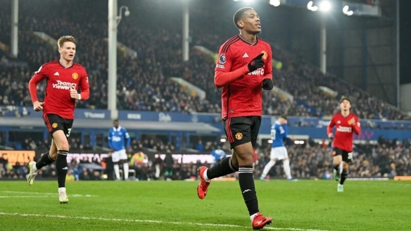

Hàng công thăng hoa, Man United vơi nỗi lo Champions League
Roy Keane tự tin rằng màn trình diễn ấn tượng của hàng công trước Everton sẽ giúp Man United có thêm cơ hội
tại Champions League.
Chiến thắng 3-0 của Quỷ đỏ ở vòng 13 Premier League đã đánh dấu ngày thi đấu hiệu quả của hàng công. Lần
lượt siêu phẩm ngả bàn đèn của Garnacho, quả penalty của Rashford và pha dứt điểm tinh tế của Martial đã
mang về cho Man United 3 điểm quý giá. Chiến thắng này đã kéo dài chuỗi trận thắng của họ lên con số trong 6
trận đấu gần nhất tại giải VĐQG, thu hẹp khoảng cách với top 4 xuống còn 4 điểm.
Với việc cả ba tiền đạo đều lập công, HLV Ten Hag chắc chắn sẽ cảm thấy bớt áp lực hơn một chút trước trận
đấu quan trọng tại Champions League với Galatasaray. Đó là quan điểm của cựu danh thủ Roy Keane sau khi
chứng kiến đội bóng cũ thăng hoa.

Các cầu thủ tấn công của MU đều đã ghi bàn trở lại
“Vấn đề đáng nói là việc ghi bàn của các cầu thủ tấn công của Man United ở những thời điểm quan trọng.
United đã không ghi đủ bàn thắng ở mùa giải này. Họ [Everton] có thể tranh cãi cả ngày, nhưng quả phạt đền
là chính xác. Còn Martial, tôi không phải là người hâm mộ của cậu ấy, nhưng cậu ấy rất lạc quan. Thật vui
khi thấy Marcus cầm lấy bóng và thực hiện quả đá. Bàn thắng đó cũng đã kết liễu tinh thần đối phương. Chắc
chắn United đã có chút vênh vang trở lại.” - Roy Keane nói.
Niềm tin trở lại với tuyến đầu
Việc cả 3 cầu thủ trên hàng công ghi bàn, Man United có cơ sở để tin vào một kết quả khả quan trước
Galatasaray tại Champions League. Hiện tại, chân sút tốt nhất của đội ở đấu trường này là Rasmus Hojlund vẫn
chưa thể trở lại do chấn thương. Do đó mọi niềm tin sẽ được đặt vào những cái tên còn lại.
Thầy trò HLV Ten Hag sẽ hành quân đến Istanbul ở lượt trận thứ 5 bảng A với nhiệm vụ phải thắng. Bởi ở 4
vòng trước, họ chỉ thu về 3 điểm và xếp cuối bảng. Nếu tiếp tục thua ở vòng này, tấm vé đi tiếp của Quỷ đỏ
xem như không còn.
EVERTON 0 - 3 MAN UNITED: HÀNG CÔNG THÔNG NÒNG, QUỶ ĐỎ GIÀNH CHIẾN THẮNG TƯNG BỪNG